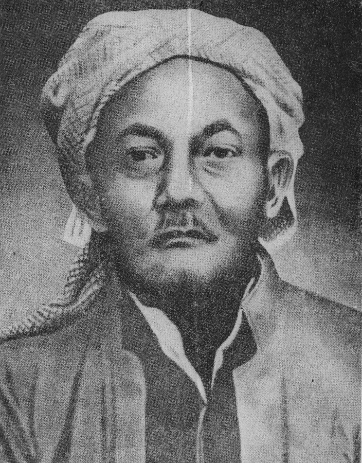
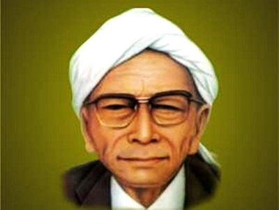
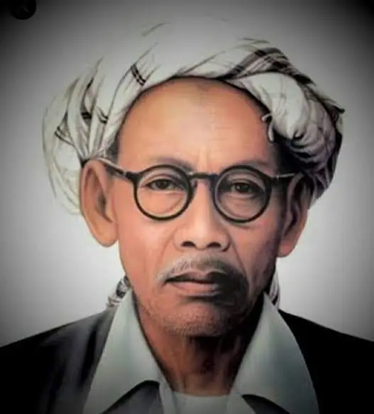
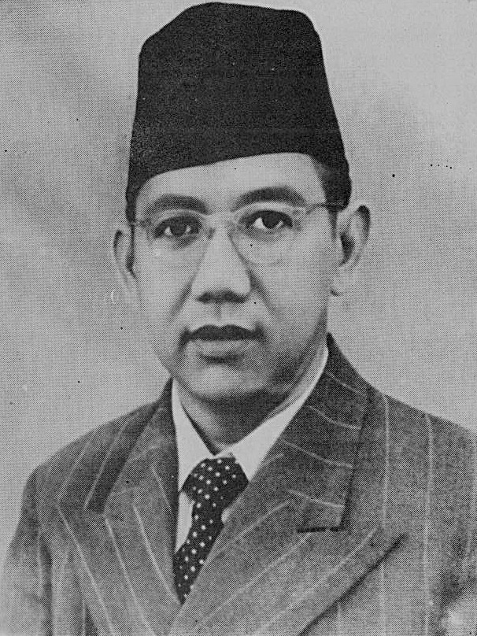
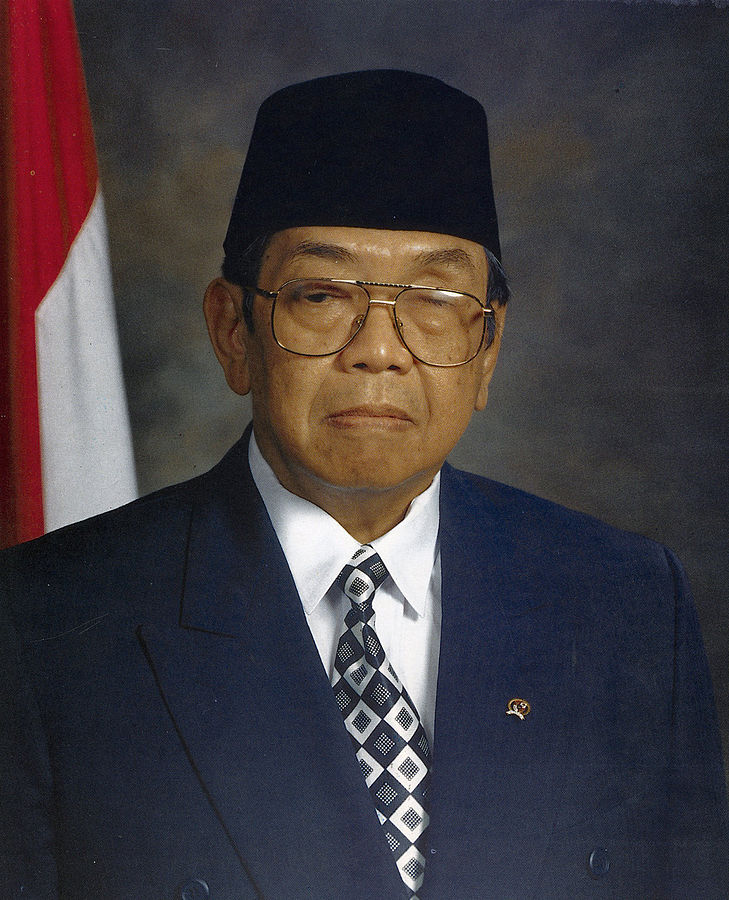
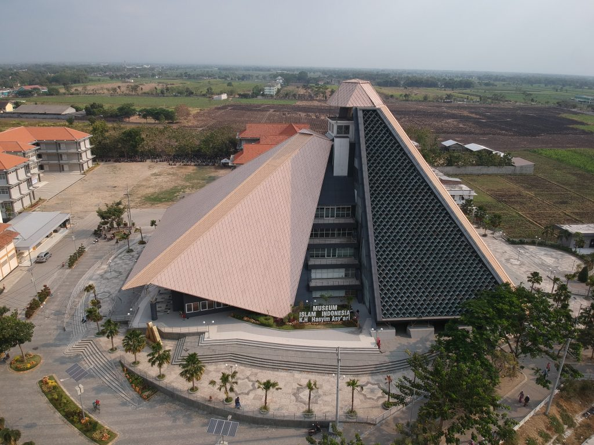

Kata JOMBANG menurut masyarakat awam sekarang berasal dari toponimi "Ijo-Abang" atau jika diartikan lebih jauh sebagai kota dengan karakteristik masyarakat "Ijo-an" (agamis) dan "Abangan" (moderat) yang hidup berdampingan secara rukun. Tidak ada yang salah dengan pemaknaan tersebut dan faktanya memang begitulah karakteristik masyarakat Kota Jombang.
Letak Geografis
Tol Jombang
Kabupaten Jombang adalah sebuah kabupaten yang terletak di bagian tengah Provinsi Jawa Timur. Luas wilayahnya 1.159,50 km², dan jumlah penduduknya 1.201.557 jiwa (2010), terdiri dari 597.219 laki-laki, dan 604.338 perempuan. Pusat pemerintahan Kabupaten Jombang terletak di tengah-tengah wilayah kabupaten, memiliki ketinggian 44 meter di atas permukaan laut, dan berjarak 79 km (1,5 jam perjalanan) dari barat daya Surabaya, ibu kota Provinsi Jawa Timur. Kabupaten Jombang memiliki posisi yang sangat strategis, karena berada di persimpangan jalur lintas utara, dan selatan Pulau Jawa (Surabaya-Madiun-Yogyakarta), jalur Surabaya-Tulungagung, serta jalur Malang-Tuban.)
Tokoh-tokoh dari Jombang
KH Hasyim Asy'ari

Hadhratussyekh KH Muhammad Hasyim Asy’ari dilahirkan dari pasangan Kiai Asy’ari dan Halimah pada hari Selasa kliwon tanggal 14 Februari tahun 1871 M atau bertepatan dengan 12 Dzulqa’dah tahun 1287 H. Tempat kelahiran beliau berada disekitar 2 kilometer ke arah utara dari kota Jombang, tepatnya di Pesantren Gedang. Gedang sendiri merupakan salah satu dusun yang terletak di desa Tambakrejo kecamatan Jombang.
Beliau merupakan Pahlawan Nasional Indonesia dan juga merupakan pendiri Organisasi Islam Nahdlatul Ulama'. Pada waktu pecah perang 10 November di Surabaya, Beliau juga mempelopori Resolusi Jihad untuk berperang melawan tentara sekutu.
KH Wahab Hasbullah

KH Abdul Wahab Hasbullah lahir di Jombang, Jawa Timur pada 31 Maret 1888. Ayahnya adalah KH Hasbulloh Said, Pengasuh Pesantren Tambakberas Jombang Jawa Timur, sedangkan Ibundanya bernama Nyai Latifah. KH Abdul Wahab Hasbullah adalah seorang ulama pendiri Nahdatul Ulama. KH Abdul Wahab Hasbullah adalah seorang ulama yang berpandangan modern, da’wahnya dimulai dengan mendirikan media massa atau surat kabar, yaitu harian umum “Soeara Nahdlatul Oelama” atau Soeara NO dan Berita Nahdlatul Ulama. Bersama dengan KH Hasyim Asy’ari menghimpun tokoh pesantren dan keduanya mendirikan Nahdlatul Ulama (Kebangkitan Ulama) pada tahun 1926.
Pada masa perjuangan mempertahankan kemerdekaan, Kiai Wahab bersama Hasyim Asy’ari dari Jombang dan Kiai Abbas dari Cirebon merumuskan Resolusi Jihad sebagai dukungan terhadap perjuangan kemerdekaan. Sesudah Hasyim Asy’ari meninggal dunia, Kiai Wahab menjadi Rais Am NU. Dia meningkatkan dukungan NU kepada Pemerintah Indonesia dalam memenangi perang melawan Pemerintah Belanda.
KH Bisri Syansuri

KH Bisri Syansuri dilahirkan di Desa Tayu, Kabupaten Pati, Provinsi Jawa Tengah, pada tanggal 28 Dzulhijjah 1304 H / 18 September 1886. Beliau merupakan anak ketiga dari pasangan KH Syansuri dan Nyai Mariah. Beliau wafat pada umur 93 tahun, tepatnya pada tanggal 25 April 1980. Beliau dimakamkan di komplek Pesantren Denanyar (PP Mamba’ul Ma’arif Denanyar, Jombang).
KH Bisri Syansuri termasuk salah seorang Kiai yang hadir dalam pertemuan 31 Januari 1926 di Surabaya, saat para ulama menyepakati berdirinya organisasi NU. Kiai Bisri duduk sebagai A’wan (anggota) Syuriah dalam susunan PBNU pertama kali itu. Sejak KH Hasyim Asy’ari wafat pada tahun 1947, jabatan Rais Akbar dihapuskan, diganti dengan Rais ‘Aam. Posisi itu dijabat oleh KH Abdul Wahab Hasbullah, di mana KH Bisri Syansuri ditetapkan sebagai wakilnya. Tahun 1971 ia menggantikan KH Abdul Wahab Hasbullah sebagai Rais ‘Aam sampai akhir hayatnya.
KH Abdul Wahid Hasyim

KH Abdul Wahid Hasyim merupakan anak pertama dari 15 orang anak dari pasangan KH Hasyim Asyari dengan Nyai Nafiqah binti Kyai Ilyas. Wahid Hasyim lahir di Jombang, pada hari Jumat legi, Rabiul Awwal 1333 H, atau 1 Juni 1914 M. Karier Wahid Hasyim dalam pentas politik nasional terus melejit. Dalam usianya yang masih muda, beberapa jabatan ia sandang. Diantaranya ketika Jepang membentuk badan yang bertugas menyelidiki usaha-usaha persiapan kemerdekaan atau dikenal dengan BPUPKI. Wahid Hasyim merupakan salah satu anggota termuda setelah BPH. Dari 62 orang yang ada, waktu itu, Wahid Hasyim masih berusia 33 tahun.
Dalam kabinet pertama yang dibentuk Presiden Soekarno pada September 1945, Wahid Hasyim ditunjuk menjadi Menteri Negara. Empat tahun kemudian, pada tanggal 20 Desember 1949, Wahid Hasyim diangkat kembali menjadi Menteri Agama dalam Kabinet Hatta. Kemudian, pada periode Kabinet Natsir dan Kabinet Sukiman, Wahid Hasyim tetap memegang jabatan Menteri Agama. Pada hari Ahad, 19 April 1953, Wahid Hasyim dipanggil ke hadirat Allah Swt, pada usia 39 tahun.
KH Abdurrahman Wahid

Gus Dur lahir pada 7 September 1940 di Jombang, Jawa Timur. Memiliki nama asli Abdurrahman Ad-dakhil. Dia adalah putra sulung dari KH Wahid Hasyim dan cucu dari KH Hasyim Asy'ari, pendiri Nahdlatul Ulama. Dari pihak Ibu, Gus Dur merupakan cucu dari KH Bisri Sansuri, pendiri Pondok Pesantren Denanyar, Jombang, Jawa Timur.
Pada 1999, Gus Dur terpilih sebagai Presiden ke-4 RI secara demokratis menggantikan Bacharuddin Jusuf Habibie. Gus Dur menjabat hingga Mei 2001. Dia dikenal sebagai presiden yang humanis dan juga humoris. Tak heran jika hingga saat ini banyak buku-buku yang tentang koleksi humor ala Gus Dur. Gus Dur meninggal dunia pada 30 Desember 2009 di Rumah Sakit Cipto Mangunkusumo (RSCM) Jakarta di usia 69 tahun.
Tempat Ikonik Kota Jombang
Logo Pariwisata Jombang
Museum KH Hasyim Asy'ari

Museum KH Hasyim Asy'ari
MINHA, sebutan untuk Museum yang berdiri di kawasan parkir makam almarhum Gus Dur (KH. Abdurrahman Wahid). MINHA berdiri diatas lahan seluas 4,9 hektar. Bangunan Museum berdiri gagah dengan model bangunan piramida. Pada bagian depan Museum Islam Indonesia di Tebuireng, dibangun sebuah monumen At-tauhid dengan hiasan 99 Asmaul Husna. Jika dilihat dari luar, bentuk bangunan piramida menampilkan keunikan bangunan Museum. Keunikan itu pada ketertarikan banyak orang, khususnya peziarah ke makam Gus Dur untuk sekedar mampir ke area Museum, meski belum dibuka.
Bangunan Museum Islam Indonesia KH. Hasyim Asy’ari ini terdiri dari 5 lantai. Di dalam museum, dari lantai satu sampai empat menjadi kawasan transformasi pengetahuan tentang sejarah masuknya Islam ke Indonesia.
Kedung Cinet
Kedung Cinet
Kedung Cinet adalah sebuah ngarai di kawasan tengah hutan yang dikelilingi oleh tebing bebatuan kapur berukir yang berada di Desa Klitih, Kecamatan Plandaan, Kabupaten Jombang, Jawa Timur.
Keindahan yang ditawarkan bikin para wisatawan betah berlama-lama. Kelokan bebatuan, rerimbunan peohonan, serta birunya air turut menyumbang keindahan dari Kedung Cinet ini. Kondisi alamnya sangat alami, cocok sekali dikunjungi untuk melepas penatnya isi kepala.
Konon, destinasi wisata ini merupakan sungai yang dahulunya dijadikan pemandian para prajurit dari zaman kerajaan Mojopahit. Bersama dengan dayang-dayang, prajurit istana Majapahit mandi di sini. Lantaran sudah sejak dahulu ada, Kedung Cinet ini seringkali diselimuti dengan mitos.
Goa Sigolo-golo
Goa Sigolo-golo
Nama Goa Sigolo-golo memang tidak sepopuler Goa Gong di Pacitan atau Goa Maharani di Lamongan. Objek wisata satu ini ini berada di Jombang, sebuah kabupaten yang terletak di tengah-tengah provinsi Jawa Timur. Tapi objek wisata alam ini cukup populer di kalangan warga Jombang dan sekitarnya lantaran memiliki pemandangan indah dan cerita mistis yang menaunginya.
Pemandangan indah khas goa ini bukan lorong-lorong goa penuh formasi batuan berwarna-warni atau sungai bawah tanah seperti di goa lain tapi pemandangan alam yang terlihat dari depan mulut objek wisata Jombang ini. Kebanyakan traveler yang datang memilih untuk menghabiskan waktu di luarnya untuk menikmati keindahan alam di sana dan sesekali memfotonya.
Dengan adanya Goa Sigolo-golo ini, tempat wisata Jombang jadi lebih lengkap. Selain itu, tempat ini termasuk dalam deretan destinasi murah karena tiket masuknya hanya dihargai sekitar lima ribu rupiah saja. Puas menikmati pemandangan dari ketinggian, kamu bisa merasakan kesegaran air sungai Boro
Candi Arimbi
Candi Arimbi
Candi Arimbi, peninggalan Majapahit di Kaki Gunung Anjasmoro ini berada di wilayah Kabupaten Jombang tepatnya di Desa Pulosari, Kecamatan Bareng. Berbeda dengan candi Majapahit lainnya di wilayah Trowulan Mojokerto yang dibangun dari bata merah, Candi Arimbi ini terbuat dari batu andesit.
Berada di kaki Gunung Anjasmoro, Candi Arimbi memang memiliki pemandangan yang indah. Sehingga banyak menarik wisatawan mengunjunginya. Lokasinya yang tepat berada di tepi jalan raya, sangat mudah diakses oleh masyarakat. Menurut cerita rakyat yang beredar bahwa candi itu pintu gerbang masuk Kerajaan Majapahit di bagian Selatan. Namun ada beberapa sumber sejarah lain menyebut candi tersebut hanyalah petilasan dari tentara Majapahit. Candi ini sendiri menjadi representasi dari Tribuwana Tunggadewi, Raja Majapahit yang memerintah pada tahun 1328-1350 Masehi. Representasi Prabu Tribuwana Tunggadewi itu terukir dalam sebuah arca Purwati yang berada di pusat candi, Arca tersebut tersimpan di Museum Nasional Jakarta.
Sementara nama Candi Arimbi sendiri sebagai nama salah satu tokoh pewayangan Mahabarata yakni Dewi Arimbi istri dari Prabu Bima Sena atau Werkodoro, salah satu Pendawa Lima. Dewi Arimbi yang merupakan adik dari Raja Raksasa Prabu Arimbo ini dimakamkan di salah satu tempat di dusun tersebut, nama dusun ini dinamakan Dusun Ngrimbi.
 Kabupaten Jombang adalah sebuah kabupaten yang terletak di bagian tengah Provinsi Jawa Timur. Luas wilayahnya 1.159,50 km², dan jumlah penduduknya 1.201.557 jiwa (2010), terdiri dari 597.219 laki-laki, dan 604.338 perempuan. Pusat pemerintahan Kabupaten Jombang terletak di tengah-tengah wilayah kabupaten, memiliki ketinggian 44 meter di atas permukaan laut, dan berjarak 79 km (1,5 jam perjalanan) dari barat daya Surabaya, ibu kota Provinsi Jawa Timur. Kabupaten Jombang memiliki posisi yang sangat strategis, karena berada di persimpangan jalur lintas utara, dan selatan Pulau Jawa (Surabaya-Madiun-Yogyakarta), jalur Surabaya-Tulungagung, serta jalur Malang-Tuban.)
Kabupaten Jombang adalah sebuah kabupaten yang terletak di bagian tengah Provinsi Jawa Timur. Luas wilayahnya 1.159,50 km², dan jumlah penduduknya 1.201.557 jiwa (2010), terdiri dari 597.219 laki-laki, dan 604.338 perempuan. Pusat pemerintahan Kabupaten Jombang terletak di tengah-tengah wilayah kabupaten, memiliki ketinggian 44 meter di atas permukaan laut, dan berjarak 79 km (1,5 jam perjalanan) dari barat daya Surabaya, ibu kota Provinsi Jawa Timur. Kabupaten Jombang memiliki posisi yang sangat strategis, karena berada di persimpangan jalur lintas utara, dan selatan Pulau Jawa (Surabaya-Madiun-Yogyakarta), jalur Surabaya-Tulungagung, serta jalur Malang-Tuban.)